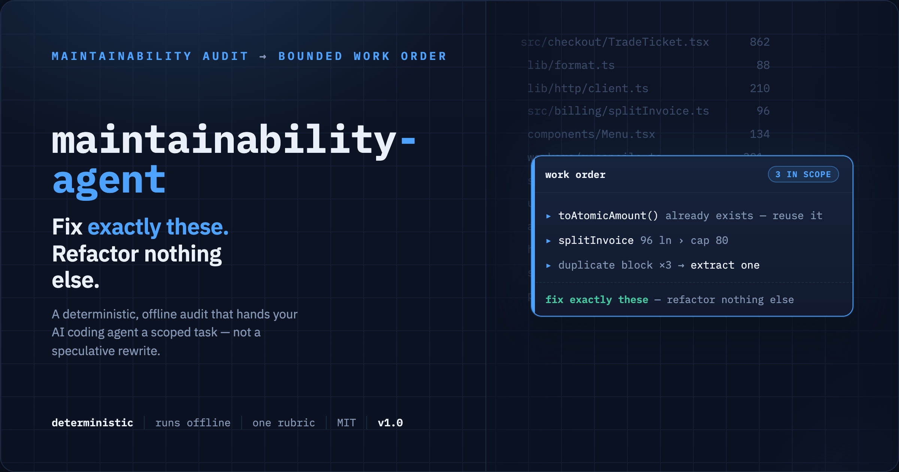

Maintainability Agent
A deterministic, offline maintainability audit whose output is a bounded work order for an AI coding agent: fix exactly these findings, and refactor nothing else. Calibrated against 201 mature open-source repositories.
pip install maintainability-agent